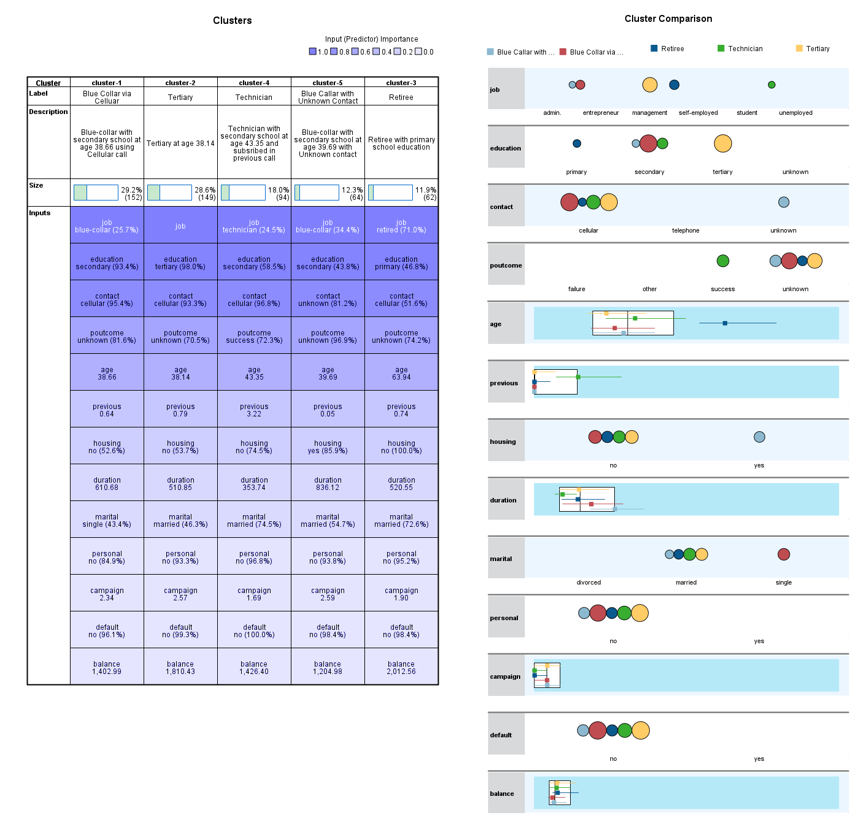

Bank A’s marketing campaign, conducted primarily through phone calls, sought to increase subscriptions to its term deposits.
Overall, customer demographics, financial standing, and the quality of campaign interactions strongly influence subscription rates.
Analysis of the dataset revealed the following key insights:
Figure 1: Overview
Subscriber Composition: Only 11.52% of customers subscribed, showing strong untapped potential.
Demographics: Subscriptions are concentrated in the 30–40 age group, who also hold higher average yearly balances. Clients under 30 show low subscription rates.
Occupational Profile: Managers, technicians, and blue-collar workers are the main subscriber groups, suggesting campaign tailoring to specific work environments.
Campaign Effectiveness: Longer calls reduce the need for follow-ups, highlighting the importance of quality over quantity in customer engagement.
Clustering Insights: K-means clustering identified promising customer segments, particularly blue-collar and technician workers with secondary education and clients aged 38–43.
Predictive Analytics: Decision trees and regression models showed that call duration, prior campaign outcomes, and occupation are the strongest predictors of subscription likelihood.
Prescriptive Analytics: Monte Carlo simulation suggests that optimizing parameters such as call duration, campaign frequency, and personalized incentives can maximize expected subscriptions.
Introduction
Bank A conducted a phone-based marketing campaign to promote its term deposit products.
The dataset contains:
Demographics: age, marital status, employment status, etc.
Bank-related data: client financial and account information.
Campaign interaction details: call duration, number of calls per client.
Outcome: whether the client subscribed to the term deposit.
This dataset enables analysis of client characteristics, campaign effectiveness, and factors influencing subscription decisions.
Situation
The marketing campaign mainly via phone calls aimed to boost term deposit subscriptions but resulted in varied outcomes.
Complication
Success rate of the existing phone call approach is uncertain. Various investment options such as cryptocurrency, stock market, annuity plan, etc
make the bank exercise more campaigns to attract customers to consider term deposits.
Business Problem
What customer characteristics / segments contribute to a higher likelihood of subscribing to term deposits?
Variables include demographic (age, marital status, and occupation), bank information (bank balance, housing loans, and personal loans), and campaign information (duration of calls, number of calls, and previous campaign outcomes).
Assumptions include that customer demographic and financial standing remain unchanged, the external market environment stays stable, and no disruptive events such as crises or new competitors occur during the forecast period.
Dataset Summary
Key variables in the dataset:
Field
Type
Description
age
Ratio
Current age
job
Nominal
Occupation
marital
Nominal
Marital status
education
Ordinal
Education level
balance
Ratio
Average yearly balance
housing
Nominal
Housing loan
personal
Nominal
Personal loan
contact
Nominal
Channel of contact
duration
Ratio
Duration of last contact
campaign
Ratio
No. of contacts in current campaign
previous
Ratio
No. of contacts prior to campaign
poutcome
Nominal
Previous campaign outcome
deposit
Nominal
Subscribed to deposit (Yes/No)
Figure 2: Dataset
Dashboard Visualisation via PowerBI
Figure 3: Dashboard
Visual Insights
Subscribers vs Non-Subscribers
Figure 4: Subscribers vs Non-Subscribers
Pie Chart is used to display proportions of deposit subscribers vs. non-subscribers. Only 11.52% of customers subscribed to term deposits, indicating significant potential for growth.
Age Groups & Average Balance
Figure 5: Age Groups & Average Balance
A histogram is used to visualize the age distribution among clients, identifying age groups with higher or lower subscription rates, suggesting potential strategies for different age group. The bar chart also shows average yearly balance balances which are available for term deposit among age group.
A positively skewed distribution suggests that the data is concentrated on one side of the scale (Taylor, 2024). The skewness indicates a small number of subscribers under 30, while the age group between early 30s and early 40s holds higher average yearly balance. Bank A can develop marketing strategies to target this age group for term deposit subscriptions.
Job Composition
Figure 6: Job Composition
A stacked bar chart is used to show job composition The primary deposit subscribers hold management positions, followed by technicians and blue-collar workers. Therefore, relevant marketing campaigns, such as roadshows, can be organized at operational sites and offices to target technicians and blue-collar workers, and managers respectively
Call Duration & Effectiveness
Figure 7: Call Duration & Effectiveness
A bubble chart is used to visualize the relationship among three dimensions last contact duration, total contacts made during this campaign and deposit subscriber vs non-subscriber, whereas a scatter chart displays only two value axes. (Pedamkar, 2023). It also uses to assess the effectiveness of the marketing campaign.
A negative correlation between the last contact duration and number of contacts performed during current campaign, suggesting that longer conversations lead to fewer follow-ups. It may reflect a strategic shift in approach, where quality interactions are prioritized over quantity, leading to more in-depth discussions rather than multiple brief contacts. The effectiveness of campaign is not necessary to have long duration of call.
Business Analytics Solution via Machine Learning
Clustering
Clustering groups customers into segments based on similar characteristics, facilitating targeted marketing efforts. K-means clustering can categorize clients into distinct groups based on demographic (age, marital status, and occupation), financial status (bank balance, housing loans, and personal loans) and responses to campaign (duration of calls, number of calls, and previous campaign outcomes). The dataset is filtered for "Deposit" = "Yes" to identify customers who subscribed to the term deposit. Load the data into the machine, specifying the input variables and the value of "K," or the number of clusters. The machine will compute K centroids, and each data point will be assigned to its nearest centroid.

Figure 8: Clustering by customer profiles
The bank can refine the marketing strategies, focusing on group of customers from blue-collar, technician with secondary school education and also customers in age group between 38 years old and 43 years old.
Predictive Modeling
The bank can apply a predictive modelling namely, regression, neural networks and decision trees to estimate probabilities of customer subscribing to a term deposit as a target outcome (“deposit”) based on criteria of customers’ social demographic status (age, marital status, and occupation), financial status (bank balance, housing loans, and personal loans) and responses to campaign (duration of calls, number of calls, and previous campaign outcomes) as the input variables. The target output is the Deposit" = "Yes". (Banu, 2023) The classification algorithm is trained on historical data and its performance is validated via cross-validation method. The anticipated outcome will be displayed in a decision tree, where each observation is allocated to a leaf node with a binary result: "Yes" for subscribe and "No" for not subscribe. The splitting criteria include demographic status, financial status and responses to campaign. The predictive model’s accuracy can measure using metrics such as Mean Square Error, F1-score ,accuracy, precision and recall (Koh, 2005)
Figure 9: Classification and Regression Trees (CART) for Deposit
Inputs higher in the decision tree i.e. duration of last contact, outcome of the previous marketing campaign (e.g., success, failure, unknown), job are considered more influential for predicting the target customers subscribing deposit.
Prescriptive Analytics
Prescriptive analytics e.g. Monte Carlo Simulation can be used to create numerous simulated scenarios by randomly varying input parameters (e.g., call duration, campaign frequency, offer incentives). For each scenario, assess the predicted probability of subscription and calculate the expected number of conversions. Monte Carlo Simulation allows the bank to provide personalized messaging at scale and increase the chance of yielding the highest expected number of subscribing the term deposit.
Recommendations & Next Steps
1. Targeted Campaigns
Focus on 30–43 age group with higher balances.
Tailor marketing approaches for managers, technicians, and blue-collar workers, including workplace campaigns and financial education sessions.
2. Improve Call Strategy
Train agents to prioritize longer, more meaningful conversations instead of multiple short follow-ups.
Use predictive analytics to identify high-potential customers before outreach.
3. Segmented Incentives
Implement decision tree models in CRM systems to provide real-time guidance to agents on customer subscription likelihood.
4. Leverage Predictive Models
Integrate decision trees in CRM for real-time guidance.
5. Run Prescriptive Simulations
Use Monte Carlo simulations to test variations in campaign strategy (e.g., incentives, call frequency).
Prioritize campaigns predicted to deliver the highest conversion rates./li>
References
Banu, S. (2023). BANK MARKETING-Term Deposit Prediction Model. Medium.


 for Deposit.png)